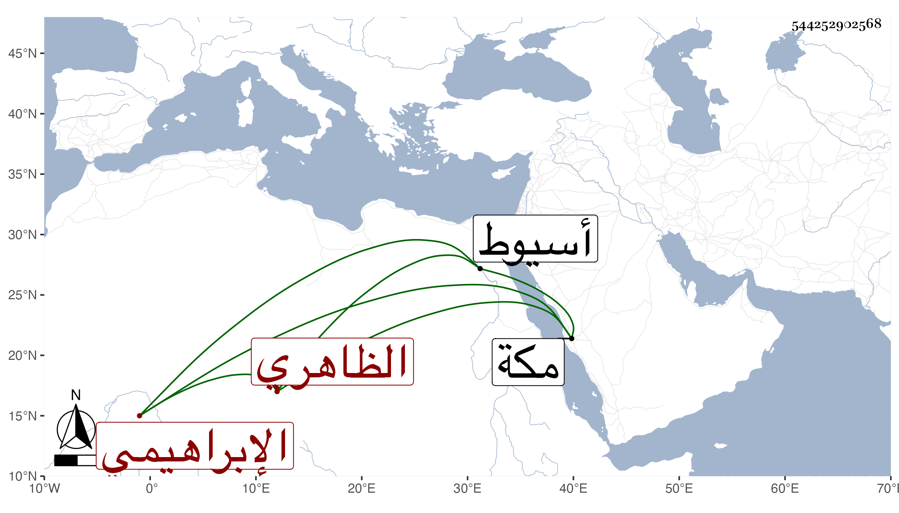

0902Sakhawi.DawLamic.ITO20230111-ara1.EIS1600.544252902568
Biography ID: 544252902568
854
أزدمر الإبراهيمي الظاهري جقمق ويعرف بالطويل ، كان بعد أستاذه وولده مبجلا في الأيام الأشرفية فلما استقر الظاهر خشقدم أمرة عشرة ثم نفاه وقدمه الأشرف قايتباي ثم أعطاه الحجوبية بعناية الدوادار الكبير بعد تمر وقدمه على من هو أولى بها منه وآل أمره إلى أن نفي لمكة ثم جيء به في الحديد إلى أسيوط ثم جهز إليه من خنقه وذلك في ربيع الآخر سنة خمس وثمانين وكان شجاعا فارسا مقداما يتلو القرآن ويقرأ مع قراء الجوق رياسة مع فهم في الجملة وقوة نفس بحيث أدته إلى معاداته من كان السبب في ترقيه ، ولهذا كان سببا في إعدامه وخوض فيما لا يعنيه وسوء عقيدة واستخفاف بأمور الدين وتنكيل بكثير من الفقهاء وازدرائهم وبذل وكرم ، وقد حارب الأمشاطي في استبدال بيت سكنه بالكبش فما استطاع بل أغلظ عليه القاضي حين قال له بحضرة القضاة والأمراء وقد اجتمعوا بالبيت المشار إليه لعمل مصلحته فيه لو كان بيت في الجنة ما أخذته منك نسأل الله السلامة ، واستقر بعده في الحجوبية الأمير برسباي قرا الظاهري .
